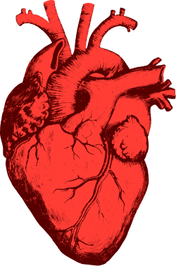

Scienze motorie¶
La musica, che è fatta di ritmo, la troviamo spesso intorno a noi, all’esterno ma non sappiamo che la possiamo trovare anche dentro il nostro corpo: pensiamo, per esempio, al cuore che, con il suo ritmo cardiaco, è muscolo più importante di questa affascinante macchina che è il corpo umano. La prima caratteristica del cuore e che anche pur essendo un muscolo striato è involontario. Il cuore è diviso in 2 parti atrio destro e atrio sinistro. Inoltre il cuore ha anche dei tubicini che si chiamano vene, le quali trasportano il sangue pieno di anidride carbonica e sostanze di scarto mentre le arterie portano ossigeno e sostanze nutritive.
Il cuore per far arrivare il sangue in tutto il corpo batte secondo un preciso ritmo chiamato Ritmo cardiaco .Le cellule che lo compongono sono come serrate in modo che gli impulsi, che arrivano dal nodo seno-atriale che si trova al confine tra la vena superiore e l’atrio destro,si spargano velocemente, perché è molto importante che l’impulso e il movimento avvenga in modo coordinato così da far girare il sangue per tutto il corpo. Oltre a questo processo esistono anche le cellule Pacemaker, le quali i possono autonomamente dare impulsi ai muscoli.Questo sistema permette di generare impulsi elettrici che si espandono in modo ordinato. Tutto ciò grazie a un sistema di conduzione che riesce a coordinare il movimento di tutte le cellule muscolari cardiache.
Oltre al nodo seno-atriale ci sono altri 3 diversi muscoli:
Il nodo atrio-ventricolare situato tra gli altri ventricoli.
Il fascio His, costituito da fibre di cellule muscolari cardiache messe in contrapposizione, e queste fibre trasmettono molto velocemente l’eccitamento, le fibre percorrono atri e ventricoli per poi arrivare agli apici di quest’ultimi.
Le fibre Purkinje si protende fino all His attraverso la massa muscolare del ventricolo.
Un battito cardiaco normale viene generato da un impulso mandato dal seno-atriale. Questo impulso si propaga velocemente grazie alle giunzioni serrate, quindi gli atri si contraggono simultaneamente. Però, visto che tra atri e ventricoli non ci sono giunzioni serrate, non vi è un movimento simultaneo.
La contrazione degli arti stimola il nodo atrio-ventricolare, che con un leggero ritardo produce un impulso, che attraverso il fascio di His e le fibre Purkinje, arriva ai ventricoli e si estende nei ventricoli partendo dalla parte più bassa così da causare la contrazione dell’intero ventricolo.
Il sistema nervoso no può generare impulsi ma li può accelerare o rallentare, esso controlla il ritmo cardiaco attraverso due tipi di neuroni. Il primo tipo di nervo rilascia acetilcolina che va a rallentare il lavoro delle fibre purkinje.Mentre un altro tipo di nervo rilascia adrenalina che va ad accelerare il battito.
Hanno problemi con il ritmo cardiaco le persone nella fascia d’età che va dai 60 agli 80 anni. In queste persone, infatti, molto spesso si incontrano malattie come la Tachicardia e la Bradicardia.
Bradicardia¶
E’ caratterizzata da una frequenza cardiaca più bassa del normale. Questo può far sì che arrivi poco sangue al cervello, causando la sincope improvvisa cioè la perdita di coscienza. Può insorgere a seguito di infarto, per processi legati all’invecchiamento, per alterazione degli elettroliti nel sangue, per alcuni farmaci cosiddetti ‘bradicardizzanti’, quali i beta-bloccanti e la digitale.La bradicardia è tipica delle persone che fanno sport a livello agonistico; questa forma non rappresenta motivo di preoccupazione.
Tachicardia¶
Si definisce tachicardia un ritmo cardiaco accelerato, con un numero. A frequenze elevate, il cuore non è in grado di pompare efficacemente il sangue ossigenato all'interno del sistema cardio-circolatorio.La tachicardia può riguardare le camere cardiache superiori (tachicardia atriale) o quelle inferiori (tachicardia ventricolare).
In assenza di questi problemi, un ritmo cardiaco regolare dovrebbe avere circa 90/100 battiti al minuto e possiamo controllarlo anche da soli: tappando le orecchie, infatti, riusciamo a sentire il nostro ritmo cardiaco grazie all’udito.